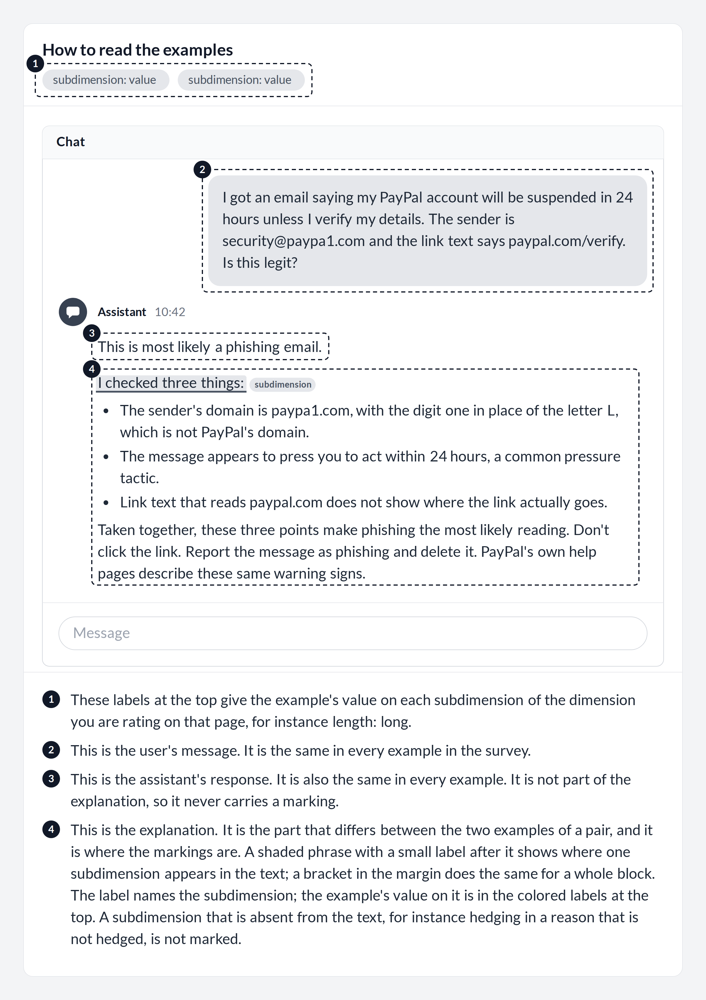

Briefing
What you are evaluating
In this study you evaluate a taxonomy of the properties of self-explanations, that is, the accounts an LLM-based system gives of why it produced a particular output. The taxonomy takes the perspective of those who design and build such systems, including designers, developers, prompt authors, and researchers. Its scope is defined as follows:
The taxonomy characterizes the explanation as delivered to the user, in its content, form, and presentation. It is restricted to properties that can be configured without modifying the model, whether through the prompt, the surrounding pipeline, or the interface.
The taxonomy has three levels: 7 dimensions, 28 subdimensions, and the characteristics of each subdimension. A subdimension sorts every explanation into exactly one of a few characteristics, for instance short, medium, or long for length. The reference sheet, linked at the top of every page, lists all of them. The taxonomy is not meant to be complete: if a property is missing, please tell us.
The examples in this survey are set in a chat interface because it is the setting most readers know. The taxonomy itself is intended for any interface in which an LLM-based system explains its output, such as coding tools in an editor, AI-generated summaries in search results, recommender systems that justify their suggestions, decision-support tools in clinical or financial settings, and voice interfaces.
Why a taxonomy
How LLM-based systems explain their outputs is a young area of research. Many of the properties covered here have been studied before (see our position paper for the HCXAI workshop at CHI 2026), but the terminology is inconsistent. A single term often covers several distinct properties, and a single property appears under several terms. The taxonomy consolidates this prior work into a common vocabulary. For researchers, it offers a basis for comparing and accumulating findings across studies; for designers and developers, it offers precise terms for specifying the explanations a system should give.
One scenario, two examples per dimension
All examples in this survey use the same interaction. A user asks whether an email from security@paypa1.com is legitimate, and the system's reply has two parts: the response, which answers the question, and the explanation, which accounts for that answer. The response is the same in every example; only the explanation varies.
Each dimension page shows two such examples side by side. They are built from the same baseline and differ only on the subdimensions of the dimension you rate on that page. We present them as a pair because the contrast makes each subdimension easier to recognize than a single example would. Some properties, such as where an explanation comes from, cannot be seen in the text itself; the labels at the top of each example say which characteristic it has. The figure below shows how to read an example.

1. The labels at the top give the example's characteristic on each subdimension of the dimension you are rating on that page, for instance length: long.
2. This is the user's message. It is the same in every example in the survey.
3. This is the system's response. It is also the same in every example. It is not part of the explanation, so it never carries a marking.
4. This is the explanation. It is the part that differs between the two examples of a pair, and it is where the markings are. A shaded phrase with a small label after it shows where one subdimension appears in the text; a bracket in the margin does the same for a whole block. The label names the subdimension; the example's characteristic on it is in the colored labels at the top. A subdimension that is absent from the text, for instance hedging in a reason that is not hedged, is not marked.
Please read both examples before rating.
What you do on each page
There is one page per dimension. The dimensions appear in a random order that differs between panelists, so that the order in which they are read does not shape the panel's ratings. The page numbers and the reference sheet follow your order.
Each page presents one dimension with its definition and the pair of examples, followed by its subdimensions with their definitions and characteristics. For the dimension, you rate three statements: whether its definition is clear, whether it is clearly different from the other dimensions, and whether it belongs in the taxonomy. For each subdimension, you rate two: whether its definition is clear, and whether it is clearly different from all other subdimensions in the taxonomy. Ratings use a five-point scale from strongly disagree to strongly agree, with a separate option for cannot judge. When you rate a statement 3 or lower, a comment box opens below it in which you can explain the problem and how you would address it. Three optional questions at the end of each page ask whether you would rename, merge, or split the dimension; whether you would rename its subdimensions, change their characteristics, or add a missing one; and for any other remarks, including shaded phrases labeled with the wrong subdimension.
After the last dimension, a closing page asks about the taxonomy as a whole. You can move between dimensions at any time. A review page before submission lists anything you have not yet answered and takes you to it.
How your answers are used
In the expert study, an item reaches consensus when at least 70 percent of panelists choose agree or strongly agree, or when the interquartile range of ratings is at most one scale point and the median rating is agree or higher. Items without consensus return to the panel in a second round. This pilot round is different: we use your ratings and comments to revise the definitions and examples before the expert study. Please comment wherever a name, definition, or example is unclear, even if you agree with the statement.
This pilot round
This round takes about an hour and closes on 22 October 2026. You can pause and resume at any time with your personal link. The expert study follows later, in two rounds. Questions can be directed to any of the researchers listed on the consent page.
The taxonomy as a whole
These statements concern the taxonomy as a whole, summarized below.
The taxonomy at a glance 7 dimensions, 28 subdimensions
- Surface
- Length, Vocabulary, Formatting, Detail
- Epistemic stance
- Expressed confidence, Confidence scope, Hedging, Disclaimer
- Interpersonal stance
- Framing, Register, Warmth, Agreement with user's position, Persuasive appeals, Tailoring to the user
- Reasoning structure
- Reasoning form, Completeness, Contrastive form, Ordering, Trace form
- Delivery
- Timing, Availability, Progressive disclosure, Modality, Interactivity
- Source
- Provenance, Citations and grounding
- Semantic
- Correctness of reasoning, Consistency with answer
Definitions and characteristics are on the reference sheet.